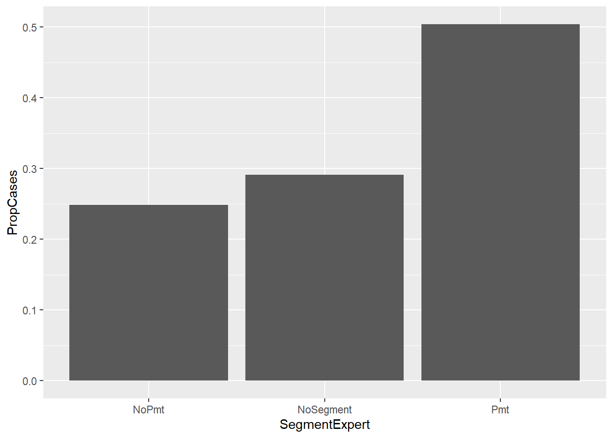
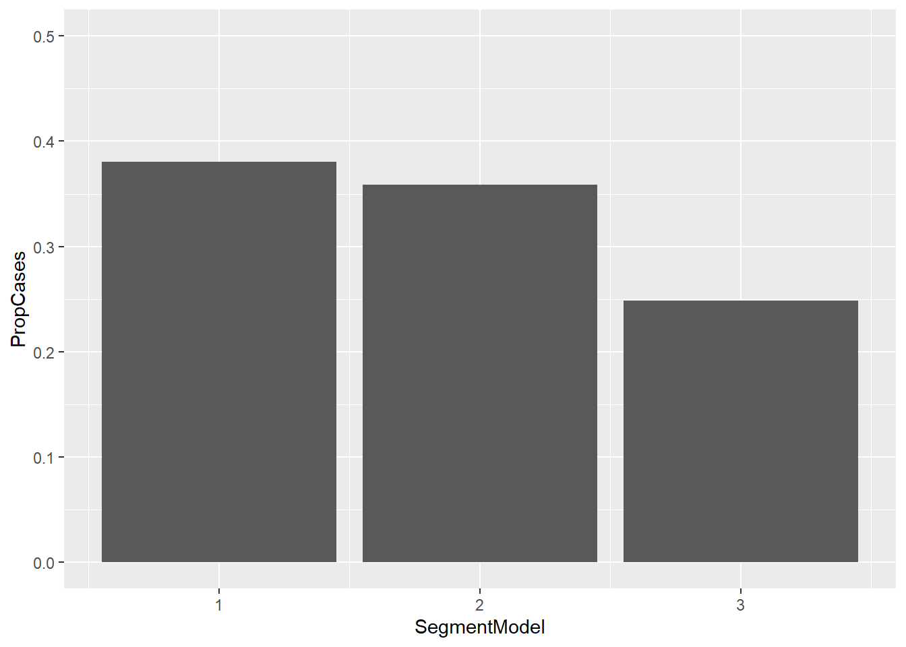
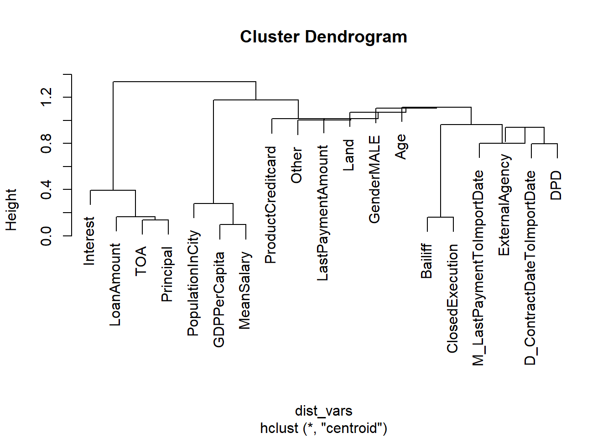

library(data.table)
library(ggplot2)
library(caret)
library(Metrics)
source("../lab3-data-preparation.R") # load & prepare data
source("funs/functions.R") # script with own functionsLab3_Rozwiazania
Zadanie #1
- Podziel zbiory na segmenty wykorzystując do tego zmienne ze zbiorów
cases~:Podejście eksperckie. Zaproponuj własny podział spraw wg wybranego przez siebie kryterium. Wybierz samodzielnie liczbę segmentów. Segmenty powinny być budowane na “mocnych cechach”. Możesz wykorzystać do tego wnioski z rozwiązań zadań z poprzednich zajęć.
Podejście z wykorzystaniem modelowania. Za pomocą wybranego modelu podziel sprawy na grupy spraw podobnych. Model zbuduj na zbiorze
cases_train. Podział na wyznaczone segmenty zaaplikuj do wszystkich zbiorów.
Sposób ekspercki:
- czy sprawa płaciła w ostatnich 12 miesiącach przed importem: LastPaymentAmount>0
cases_train[, SegmentExpert := setExpertSegment(LastPaymentAmount)]
cases_valid[, SegmentExpert := setExpertSegment(LastPaymentAmount)]
cases_test[, SegmentExpert := setExpertSegment(LastPaymentAmount)]
cases_train[,.N, .(SegmentExpert)] SegmentExpert N
1: NoPmt 21595
2: Pmt 12448
3: NoSegment 3700cases_valid[,.N, .(SegmentExpert)] SegmentExpert N
1: NoPmt 21447
2: Pmt 12663
3: NoSegment 3632cases_test[,.N, .(SegmentExpert)] SegmentExpert N
1: NoPmt 21633
2: Pmt 12423
3: NoSegment 3688Modelowanie - k-means:
- preprocessing
set.seed(123)
features <- c("TOA", "DPD")
n_groups <- 3
cases_model <- cases_train[,.SD, .SDcols=features]
preprocess <- caret::preProcess(cases_model, method = c("medianImpute", "range"), na.remove=TRUE)
cases_model <- predict(preprocess, newdata=cases_model)- model
model <- kmeans(x = cases_model, centers = n_groups)- predykcje
cases_train[,SegmentModel := predictKMeans(model = model, newdata = cases_train, preprocess = preprocess)]
cases_valid[,SegmentModel := predictKMeans(model = model, newdata = cases_valid, preprocess = preprocess)]
cases_test[,SegmentModel := predictKMeans(model = model, newdata = cases_test, preprocess = preprocess)]Zadanie #2
Porównaj oba podejścia w kontekście, czy sprawa płaciła w pierwszych 12 miesiącach obsługi. Samodzielnie wybierz metodę, w jaki sposób je zestawić. Porównania dokonaj na danych ze zbioru valid. Do dalszych analiz wybierz lepszą segmentację.
- Segmentacja ekspercka:
ncases_in_segments <- cases_valid[,.(NCasesSegment=.N), SegmentExpert]
ncases_in_groups <- cases_valid[targets_valid][IfPayment==1, .(NCases=.N), .(SegmentExpert)]
proportions <- ncases_in_groups[ncases_in_segments, on = "SegmentExpert"][
,.(SegmentExpert, PropCases=NCases/NCasesSegment)]
setorder(proportions, SegmentExpert)
proportions SegmentExpert PropCases
1: NoPmt 0.2485662
2: NoSegment 0.2910242
3: Pmt 0.5039090# Coefficient of Variation
sd(proportions$PropCases) / mean(proportions$PropCases)[1] 0.393357ggplot(data = proportions) +
geom_bar(aes(x = SegmentExpert, y = PropCases), stat="identity")
- Segmentacja z modelu:
ncases_in_segments <- cases_valid[,.(NCasesSegment=.N), SegmentModel]
ncases_in_groups <- cases_valid[targets_valid][IfPayment==1, .(NCases=.N), .(SegmentModel)]
proportions <- ncases_in_groups[ncases_in_segments, on = "SegmentModel"][
,.(SegmentModel, PropCases=NCases/NCasesSegment)]
setorder(proportions, SegmentModel)
proportions SegmentModel PropCases
1: 1 0.3805332
2: 2 0.3587525
3: 3 0.2482608# Coefficient of Variation
sd(proportions$PropCases) / mean(proportions$PropCases)[1] 0.2154464ggplot(data = proportions) +
geom_bar(aes(x = SegmentModel, y = PropCases), stat="identity") +
ylim(c(0, 0.5))
Lepsza segmentacja: Segmentacja ekspercka. Większe zróżnicowanie danych (patrz: współczynnik zmienności) pod kątem udziału spraw płacących. Potwierdza to również ocena wizualna przy użyciu wykresów.
Zadanie #3
Użyj modelu k najbliższych sąsiadów do rozwiązania poniższych problemów.
regresja. Dla spraw ze zbioru
testwyznacz prognozę wpłat do 12 miesiąca obsługi.klasyfikacja. Dla spraw ze zbioru
testzaprognozuj, czy dokonają wpłaty w pierwszych 12 miesiącach obsługi.
Przetestuj różne warianty hiperparametrów modelu np.: liczba dobieranych sąsiadów, liczba cech oraz jakie cechy wyznaczają przestrzeń, w której wyznaczamy odległości między sprawami.
Dobieraj sprawy podobne w obrębie wyznaczonych i wybranych segmentów.
Dobieraj z sąsiadów z połączonych zbiorów
trainivalid.Wybierz odpowiednie metryki do oceny modeli.
Przygotowanie danych:
# usunięcie spacji z nazw produktu
cases_train[,Product:=gsub("\\s", "", Product)]
cases_valid[,Product:=gsub("\\s", "", Product)]
cases_test[,Product:=gsub("\\s", "", Product)]
reference <- rbindlist(list(cases_train, cases_valid))
reference_targets <- rbindlist(list(targets_train, targets_valid))
test_set <- copy(cases_test)
# Przekształcenie zmiennych nienumerycznych w numeryczne
dummy <- caret::dummyVars(~ Gender + Product, data=reference, levelsOnly=FALSE, fullRank=TRUE)
dummy_vars_reference <- data.table(predict(dummy, newdata=reference))
dummy_vars_test <- data.table(predict(dummy, newdata=test_set))
reference <- cbind(reference, dummy_vars_reference)
test_set <- cbind(test_set, dummy_vars_test)
reference[,`:=`(Product=NULL, Gender=NULL, SegmentModel=NULL)]
test_set[,`:=`(Product=NULL, Gender=NULL, SegmentModel=NULL)]
# uzupełnienie NA i transfomracja zmiennych do tej samej skali
cols_to_preprocess <- setdiff(names(reference), c("CaseId", "SegmentExpert"))
preprocess <- preProcess(reference[,.SD,.SDcols=cols_to_preprocess], method = c("medianImpute", "range"))
reference <- predict(preprocess, newdata=reference)
test_set <- predict(preprocess, newdata=test_set)
summary(reference) CaseId LoanAmount TOA Principal
Min. : 8082268 Min. :0.00000 Min. :0.00000 Min. :0.00000
1st Qu.: 8385667 1st Qu.:0.01098 1st Qu.:0.01924 1st Qu.:0.01622
Median : 9805287 Median :0.02197 Median :0.04493 Median :0.03944
Mean : 9513336 Mean :0.04224 Mean :0.09953 Mean :0.08981
3rd Qu.:10276474 3rd Qu.:0.04921 3rd Qu.:0.11837 3rd Qu.:0.10620
Max. :11478366 Max. :1.00000 Max. :1.00000 Max. :1.00000
Interest Other D_ContractDateToImportDate
Min. :0.000000 Min. :0.0000000 Min. :0.0000
1st Qu.:0.002034 1st Qu.:0.0006754 1st Qu.:0.4765
Median :0.011875 Median :0.0039310 Median :0.5270
Mean :0.037869 Mean :0.0089919 Mean :0.5312
3rd Qu.:0.044025 3rd Qu.:0.0092374 3rd Qu.:0.5857
Max. :1.000000 Max. :1.0000000 Max. :1.0000
DPD ExternalAgency Bailiff ClosedExecution
Min. :0.00000 Min. :0.0000 Min. :0.00000 Min. :0.00000
1st Qu.:0.07845 1st Qu.:0.0000 1st Qu.:0.00000 1st Qu.:0.00000
Median :0.14307 Median :0.0000 Median :0.00000 Median :0.00000
Mean :0.19391 Mean :0.4734 Mean :0.08436 Mean :0.06848
3rd Qu.:0.25819 3rd Qu.:1.0000 3rd Qu.:0.00000 3rd Qu.:0.00000
Max. :1.00000 Max. :1.0000 Max. :1.00000 Max. :1.00000
Land PopulationInCity Age LastPaymentAmount
Min. :0.0000 Min. :0.000000 Min. :0.0000 Min. :0.0000000
1st Qu.:0.2500 1st Qu.:0.004429 1st Qu.:0.3556 1st Qu.:0.0000000
Median :0.4167 Median :0.024215 Median :0.4444 Median :0.0000000
Mean :0.4523 Mean :0.142689 Mean :0.4565 Mean :0.0013276
3rd Qu.:0.6667 3rd Qu.:0.095586 3rd Qu.:0.5444 3rd Qu.:0.0009279
Max. :1.0000 Max. :1.000000 Max. :1.0000 Max. :1.0000000
M_LastPaymentToImportDate GDPPerCapita MeanSalary SegmentExpert
Min. :0.0000 Min. :0.0000 Min. :0.0000 Length:75485
1st Qu.:0.6122 1st Qu.:0.1248 1st Qu.:0.1221 Class :character
Median :1.0000 Median :0.2049 Median :0.2133 Mode :character
Mean :0.8048 Mean :0.3201 Mean :0.3166
3rd Qu.:1.0000 3rd Qu.:0.4075 3rd Qu.:0.4044
Max. :1.0000 Max. :1.0000 Max. :1.0000
GenderMALE ProductCreditcard
Min. :0.0000 Min. :0.0000
1st Qu.:0.0000 1st Qu.:0.0000
Median :1.0000 Median :0.0000
Mean :0.6117 Mean :0.2701
3rd Qu.:1.0000 3rd Qu.:1.0000
Max. :1.0000 Max. :1.0000 summary(test_set) CaseId LoanAmount TOA Principal
Min. : 8082275 Min. :0.00000 Min. :0.00000 Min. :0.00000
1st Qu.: 8385676 1st Qu.:0.01098 1st Qu.:0.01919 1st Qu.:0.01622
Median : 9805290 Median :0.02197 Median :0.04492 Median :0.03977
Mean : 9514182 Mean :0.04201 Mean :0.09881 Mean :0.08943
3rd Qu.:10276476 3rd Qu.:0.04833 3rd Qu.:0.11726 3rd Qu.:0.10623
Max. :11478342 Max. :2.28747 Max. :1.00004 Max. :0.98302
Interest Other D_ContractDateToImportDate
Min. :0.000000 Min. :0.0000000 Min. :0.3736
1st Qu.:0.002064 1st Qu.:0.0006754 1st Qu.:0.4768
Median :0.011919 Median :0.0039310 Median :0.5265
Mean :0.037361 Mean :0.0087593 Mean :0.5310
3rd Qu.:0.043790 3rd Qu.:0.0092419 3rd Qu.:0.5848
Max. :0.965498 Max. :0.5011030 Max. :2.3587
DPD ExternalAgency Bailiff ClosedExecution
Min. :0.00000 Min. :0.000 Min. :0.0000 Min. :0.00000
1st Qu.:0.07935 1st Qu.:0.000 1st Qu.:0.0000 1st Qu.:0.00000
Median :0.14307 Median :0.000 Median :0.0000 Median :0.00000
Mean :0.19315 Mean :0.475 Mean :0.0837 Mean :0.06838
3rd Qu.:0.25759 3rd Qu.:1.000 3rd Qu.:0.0000 3rd Qu.:0.00000
Max. :1.00000 Max. :1.000 Max. :1.0000 Max. :1.00000
Land PopulationInCity Age LastPaymentAmount
Min. :0.0000 Min. :0.000000 Min. :0.0000 Min. :0.0000000
1st Qu.:0.2500 1st Qu.:0.004376 1st Qu.:0.3556 1st Qu.:0.0000000
Median :0.4167 Median :0.024215 Median :0.4444 Median :0.0000000
Mean :0.4540 Mean :0.140494 Mean :0.4571 Mean :0.0012954
3rd Qu.:0.6667 3rd Qu.:0.095586 3rd Qu.:0.5444 3rd Qu.:0.0008404
Max. :1.0000 Max. :1.000000 Max. :0.9778 Max. :0.7037760
M_LastPaymentToImportDate GDPPerCapita MeanSalary SegmentExpert
Min. :0.0000 Min. :0.0000 Min. :0.0000 Length:37744
1st Qu.:0.6122 1st Qu.:0.1248 1st Qu.:0.1221 Class :character
Median :1.0000 Median :0.2049 Median :0.2133 Mode :character
Mean :0.8075 Mean :0.3172 Mean :0.3146
3rd Qu.:1.0000 3rd Qu.:0.4075 3rd Qu.:0.4044
Max. :1.0000 Max. :1.0000 Max. :1.0000
GenderMALE ProductCreditcard
Min. :0.0000 Min. :0.000
1st Qu.:0.0000 1st Qu.:0.000
Median :1.0000 Median :0.000
Mean :0.6195 Mean :0.271
3rd Qu.:1.0000 3rd Qu.:1.000
Max. :1.0000 Max. :1.000 Wyznaczenie ważności zmiennych do modelu knn:
- korelacje z jedną ze zmiennych objaśnianych.
abscorr_with_target <- abs(cor(
x = reference[,.SD,.SDcols=cols_to_preprocess],
y = reference_targets[,IfPayment]
))
variables_cor <- data.table(
Name = rownames(abscorr_with_target),
Cor = abscorr_with_target[,1]
)
setorder(variables_cor, -Cor)
variables_cor Name Cor
1: M_LastPaymentToImportDate 0.297046018
2: DPD 0.124630777
3: Age 0.086164724
4: ExternalAgency 0.069585010
5: Other 0.060183516
6: LastPaymentAmount 0.054285607
7: GenderMALE 0.047876046
8: LoanAmount 0.047740066
9: PopulationInCity 0.045720308
10: ProductCreditcard 0.045038407
11: MeanSalary 0.043696369
12: Bailiff 0.041896075
13: ClosedExecution 0.040931947
14: GDPPerCapita 0.039460638
15: Principal 0.037644328
16: Interest 0.021049431
17: TOA 0.018440193
18: Land 0.014579489
19: D_ContractDateToImportDate 0.007642223- Grupy zmiennych wg korelacji. Szukamy grup zmiennych skorelowanych między sobą.
cors_between_variables <- cor(reference[,.SD,.SDcols=cols_to_preprocess])
dist_vars <- dist(cors_between_variables, method="euclidean")
hcl_model <- hclust(dist_vars, method = "centroid")
plot(hcl_model)
k <- 5
variable_groups <- cutree(hcl_model, k=k)
variable_groups <- data.table(
Name = names(variable_groups),
Group = variable_groups
)
variable_groups Name Group
1: LoanAmount 1
2: TOA 1
3: Principal 1
4: Interest 1
5: Other 2
6: D_ContractDateToImportDate 3
7: DPD 3
8: ExternalAgency 3
9: Bailiff 3
10: ClosedExecution 3
11: Land 3
12: PopulationInCity 4
13: Age 3
14: LastPaymentAmount 3
15: M_LastPaymentToImportDate 3
16: GDPPerCapita 4
17: MeanSalary 4
18: GenderMALE 3
19: ProductCreditcard 5- Zebranie powyższych danych w całość:
variables <- variables_cor[variable_groups, on="Name"]
setorder(variables, Group, -Cor)
variables Name Cor Group
1: LoanAmount 0.047740066 1
2: Principal 0.037644328 1
3: Interest 0.021049431 1
4: TOA 0.018440193 1
5: Other 0.060183516 2
6: M_LastPaymentToImportDate 0.297046018 3
7: DPD 0.124630777 3
8: Age 0.086164724 3
9: ExternalAgency 0.069585010 3
10: LastPaymentAmount 0.054285607 3
11: GenderMALE 0.047876046 3
12: Bailiff 0.041896075 3
13: ClosedExecution 0.040931947 3
14: Land 0.014579489 3
15: D_ContractDateToImportDate 0.007642223 3
16: PopulationInCity 0.045720308 4
17: MeanSalary 0.043696369 4
18: GDPPerCapita 0.039460638 4
19: ProductCreditcard 0.045038407 5Model knn w segmentach. Referencją w modelowaniu segmentu NoSegment jest cały zbiór referencyjny.
segments <- reference[,unique(SegmentExpert)]
# bierzemy pierwszą ("najlepsza") zmienną z każdej grupy
selected_variables <- variables[,.(Variables = head(Name, 1)), .(Group) ]
selected_variables <- selected_variables$Variables
reference_model <- reference[reference_targets[,.(CaseId, SumOfPayments)], on = c("CaseId" = "CaseId")]
test_set_model <- test_set[targets_test[,.(CaseId, SumOfPayments)], on = c("CaseId" = "CaseId")]
predictions <- data.table()
for(seg in segments) {
# Test set in segment
seg_test_caseids <- test_set_model[SegmentExpert==seg, CaseId]
seg_test <- test_set_model[SegmentExpert==seg, .SD, .SDcols=selected_variables]
seg_test_targets <- test_set_model[SegmentExpert==seg, SumOfPayments]
# Reference in segment
if(seg == "NoSegment") {
seg_ref <- reference_model[, .SD, .SDcols=selected_variables]
seg_ref_targets <- reference_model[, SumOfPayments]
} else {
seg_ref <- reference_model[SegmentExpert==seg, .SD, .SDcols=selected_variables]
seg_ref_targets <- reference_model[SegmentExpert==seg, SumOfPayments]
}
# Model
knn_model <- caret::knnregTrain(
train=seg_ref,
test=seg_test,
y = seg_ref_targets,
k = 5)
predictions_in_segment <- data.table(
CaseId = seg_test_caseids,
Segment=seg,
Real = seg_test_targets,
Pred = knn_model
)
predictions <- rbindlist(list(predictions, predictions_in_segment))
}
# Errors:
Metrics::mae(predictions$Real, predictions$Pred)[1] 662.9413Metrics::rmse(predictions$Real, predictions$Pred)[1] 1709.135